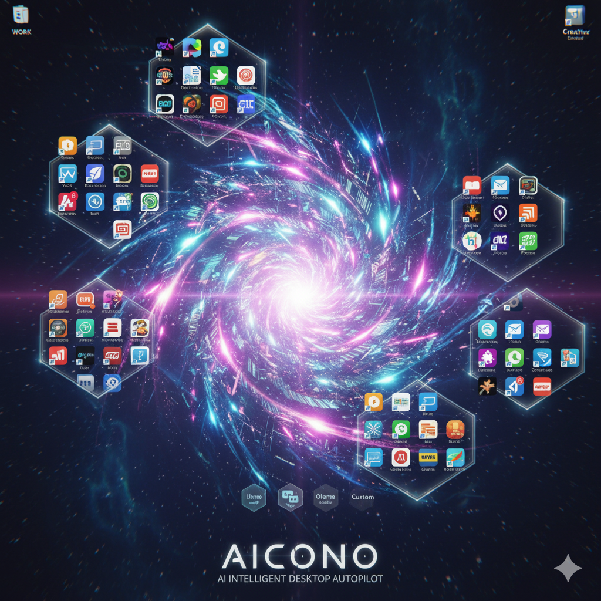
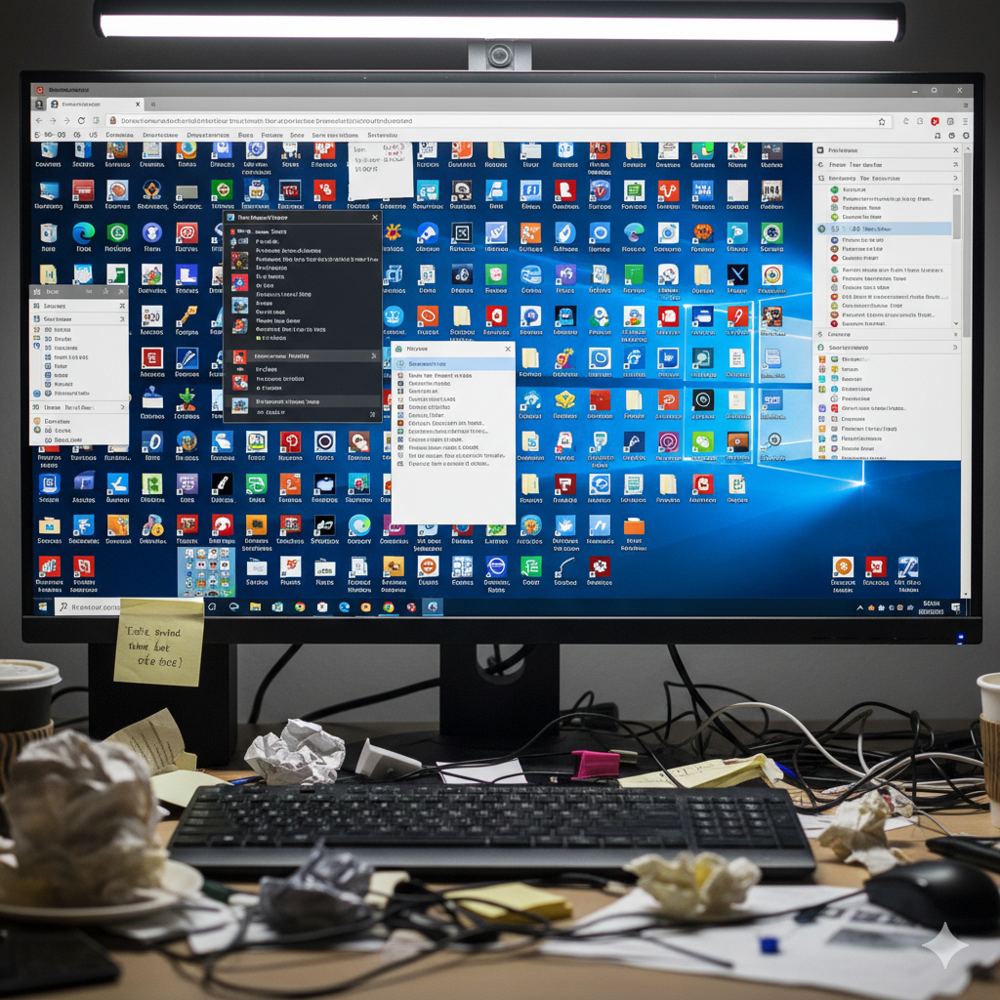
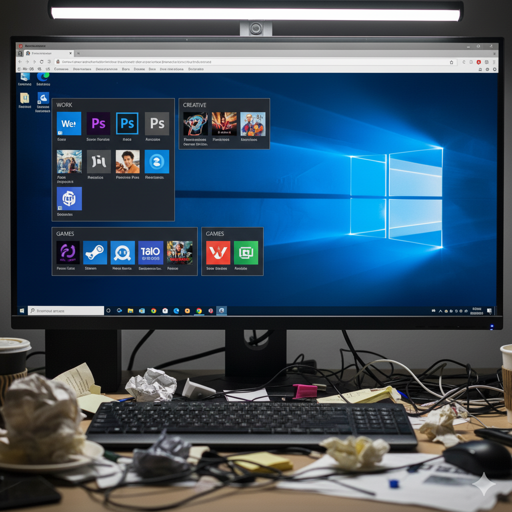
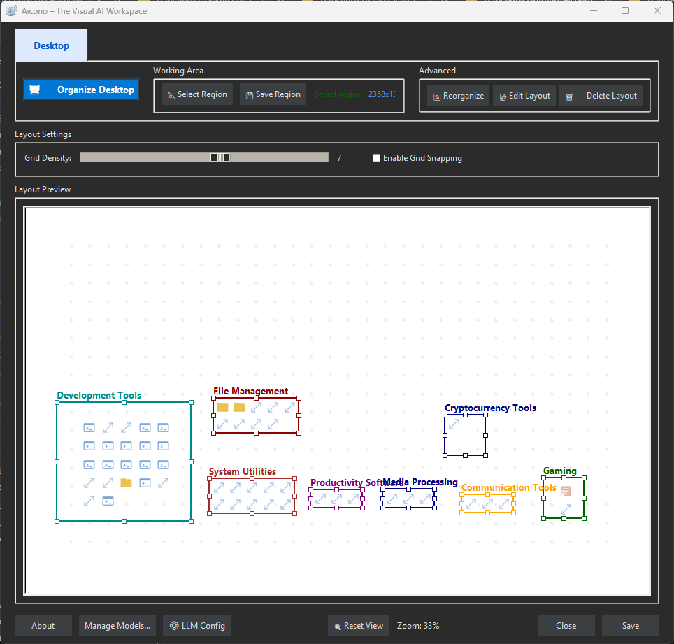

🚀 Aicono
🧠 The AI intelligent desktop icon autopilot for Windows! 🎯

🔥 Say goodbye to desktop chaos – Aicono uses cutting-edge AI to automatically group and arrange your icons! 💪

Cluttered desktop before using Aicono – icons scattered everywhere!
Desktops get messy fast with icons everywhere. Manual organizing is tedious, and Windows' basic auto-arrange doesn't cut it.

Organized desktop after Aicono arrangement – AI groups and arranges icons perfectly!
Aicono solves this with AI-powered categorization (Work, Games, Utilities) and smart spatial layout – no overlaps, in your chosen desktop area. Preview and apply with ease!
🎥 Aicono in Action
📹 Watch the creation of Aicono's second video ad

Aicono's main window – control your desktop organization with ease!
$ md5sum.exe Aicono.exe a55efc521133b5831c38f0bcfbdfb7c4
🤖 What is Aicono?
Aicono is a Windows-only freeware app that uses the latest AI technology to automatically group desktop icons by category (e.g., "Work," "Games," "Utilities"). It employs a sophisticated spatial algorithm to arrange them neatly without overlaps in a customizable desktop area. Fine-tune with a visual preview tool – all from your system tray! 🧠 No more manual dragging or cluttered screens.
⭐ Key Features
- 🧠 AI-Powered Grouping: Automatically categorizes icons logically into groups like Work, Games, Utilities
- 🎛️ Customizable AI: Supports Llama (default), Ollama, or custom models for grouping
- 📐 Intelligent Layout: Sophisticated spatial algorithm arranges icons neatly, no overlaps
- 📍 Customizable Area: Select specific desktop regions for icon placement
- 👁️ Visual Preview: See the new layout before applying changes
- 📦 Portable App: No installation required – just run and go!
- 💰 Freeware: Completely free to download and use, no strings attached
🎯 Who is Aicono For?
Aicono targets frustrated Windows users with cluttered desktops – gamers, students, professionals, and AI enthusiasts who want productivity, clean design, and a free solution to everyday chaos. 💯
- 🎮 Gamers: Group game icons neatly for quick access without desktop mess
- 📚 Students: Organize study files and apps in logical categories
- 💼 Professionals: Keep work tools grouped and arranged for efficiency
- 🤖 AI Enthusiasts: Experience advanced AI in a practical, free tool
⚙️ How Does It Work?
🧠 Fully automatic & user-friendly! Aicono runs in the background and:
- 👁️ Scans desktop icons in real-time
- 🧠 Uses AI to categorize (Work, Games, etc.)
- 📐 Applies spatial layout without overlaps
- 👀 Offers preview for fine-tuning
- 🔧 Customizes to your needs with area selection
🏆 Why Aicono?
Unlike basic Windows tools or manual methods, Aicono delivers AI-driven elegance and efficiency: 🎯
- ⚡ Instant Results: Scan, group, arrange – done in seconds
- 🔒 Safe & Portable: No installation, no system changes
- 🧠 AI-Optimized: Leverages modern models like Llama for smart grouping
- 💰 100% Free: Core features forever free, no subscriptions
- 🛡️ Lightweight: Minimal resource use, runs smoothly
🔧 Technical Features
- 🧵 AI Integration: Supports Llama, Ollama, and custom models
- 📋 Spatial Algorithm: Advanced layout without overlaps
- 🎛️ GUI Preview: Visual tool for layout adjustments
- 🔄 Event-Driven: Responds to desktop changes
- 🐞 Logging: For troubleshooting and optimization
- ⚙️ Configurable: JSON-based settings for areas and models
💡 Installation & Setup
🚀 3 simple steps to a clean desktop:
- 📥 Download: Get the Aicono-v1.0.0.zip archive
- 📂 Extract: Unzip to any folder
- ▶️ Run: Double-click Aicono.exe – start organizing!
🎯 Pro Tip: Configure your AI model and desktop area in the settings for best results!
🌟 Why Aicono Stands Out
Aicono goes beyond basic tools with 🧠 AI intelligence for effortless desktop management!
| Feature | 🏆 Aicono | Other Tools |
|---|---|---|
| AI Grouping | ✅ Intelligent AI | ❌ Manual |
| Layout Algorithm | ✅ Spatial No-Overlap | ❌ Basic Arrange |
| Preview | ✅ Visual Tool | ❌ None |
| Portability | ✅ No Install | ⚠️ Installer Required |
🛠️ Advanced Features
Aicono offers a 🎪 complete AI suite for desktop mastery:
- 🧵 Multi-Model Support: Llama, Ollama, custom for flexible grouping
- 📨 Cache System: Speeds up repeated scans
- 🔄 Real-Time Updates: Adapts to new icons instantly
- 📊 Category Detection: AI analyzes icon types and names
- 🎚️ Area Config: JSON-defined desktop regions
- 🔐 Secure: Local processing, no data sent out
🚀 Practical Usage Examples
💡 Aicono shines in real life:
- 🎮 Gaming Setup: Groups games in one area, clears rest for quick access
- 📁 File Organization: Sorts documents by project categories
- 💼 Work Mode: Arranges tools in a compact desktop zone
- 😴 Idle Cleanup: Auto-arranges after sessions
- 👨🎓 Student Life: Groups school apps and files neatly
📋 System Requirements
- 💻 OS: Windows 10/11 (64-bit)
- 🧠 AI Support: Optional local LLM (Llama/Ollama) or basic grouping
- 💾 RAM: Minimum 2GB (more for AI models)
- 💽 Storage: ~1GB for app + models
- ⚡ Permissions: Standard user for desktop access
🔒 Security & Development
Aicono follows 🛡️ modern standards:
- 🔐 MD5 Verification: Ensures download integrity
- ✅ Tested: For Windows stability
- 📦 Portable: No registry or system files touched
🚀 Ready for an Organized Desktop? 🚀
Download Aicono now and let AI autopilot your icons! 💫
⬇️ Direct Download (Portable)
$ md5sum.exe Aicono.exe a55efc521133b5831c38f0bcfbdfb7c4
🙏 Support & Donations
💚 Donate & support Aicono development!
PayPal: paypal.me/Gigamegs
Bitcoin Cash (BCH)
📌 BCH Address: bitcoincash:qrvhk77ujevd9n7jse4jewm99eg95at7tvc6m9v2vv